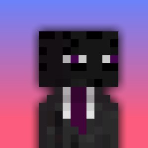

03 — About
Corn Studios is a one-person indie software studio based in Dutchess County, NY. The focus is on building free, open source Windows tools that actually make your machine better: faster, cleaner, and more yours.
Win11 Optimizer started as a personal script that got out of hand in the best way. Everything built here comes from real frustration with bloated software and slow setups and a belief that good tools should be free.
Corn Builds is the hardware side - local custom PC builds and remote spec consulting for anyone who wants a parts list they can actually understand.